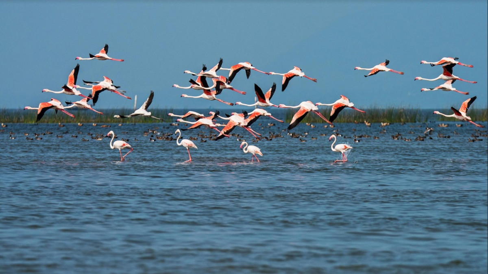
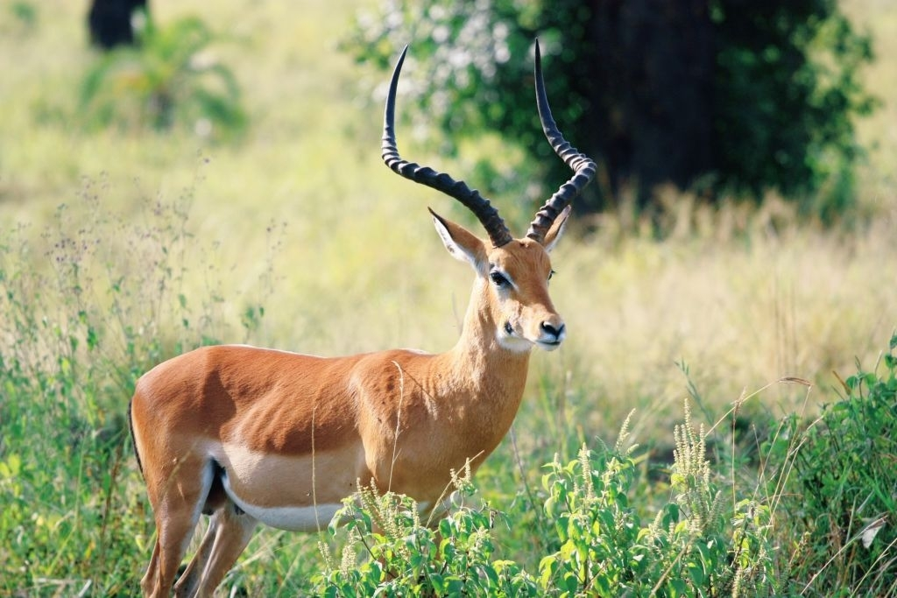
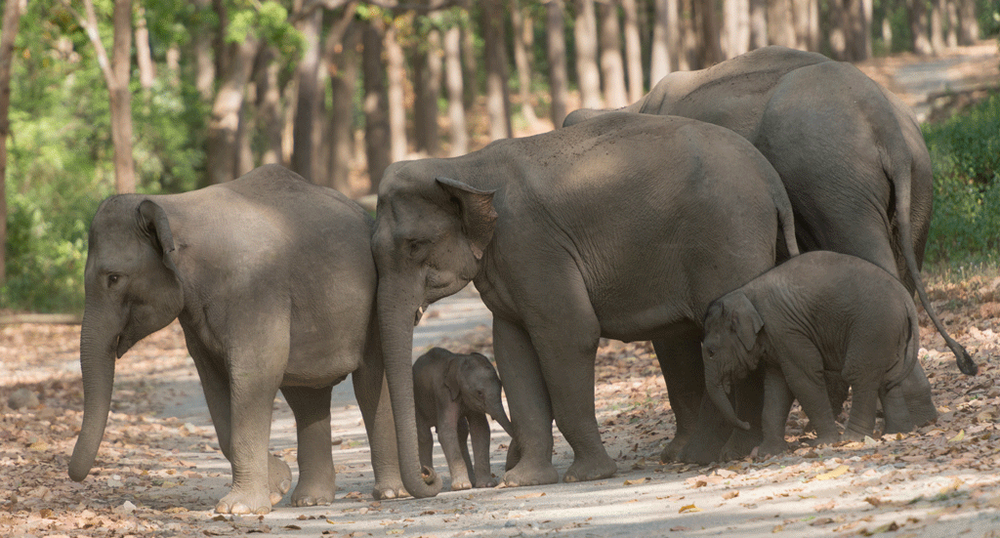
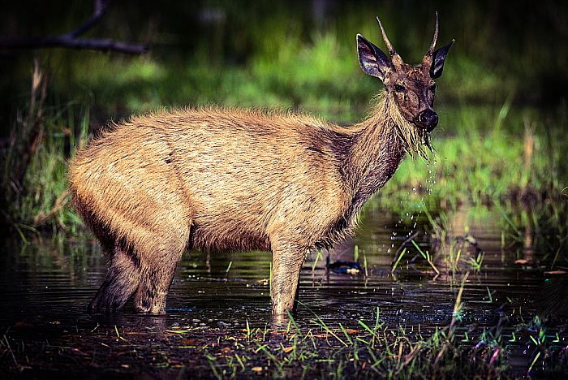
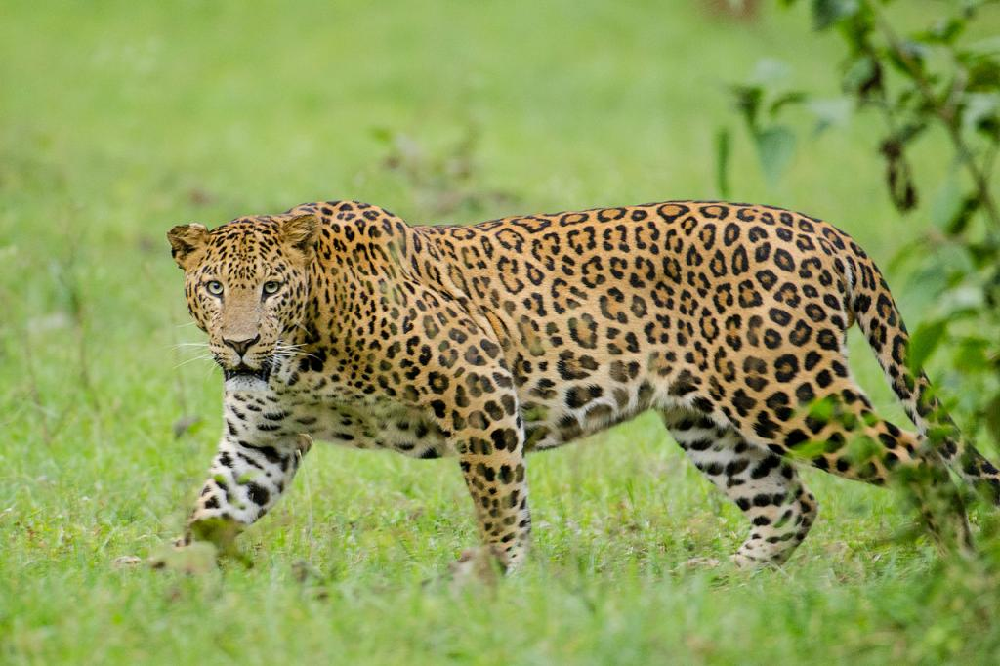
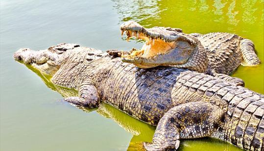

WildLife of Odisha
Home
Protected Areas
About
Feedback
Others
National parks in odihsa
Forest tourist places
Forest tourist places
     
Simlipal National Park
Baripada Odisha
"Largest Wildlife Sanctuary of India"
Simlipal National Park, Baripada Overview
Reflecting the natural beauty of an era gone by, Simlipal National Park is in a beautiful and scenic town in Odisha.
Situated in Mayurbhanj, it once used to be a hunting ground for the rulers of the province. Simlipal is the largest wildlife sanctuary in India and is also considered as one of the principal tiger projects in India.
The area is rich with dense forests, striking meadows, startling waterfalls and beautiful rivers. It is blessed with great bio-diversity and huge varieties of fauna that make it a great place to engage in wildlife sightseeing! Simlipal Reserve is home to more than 1000 varieties of plants. It has around 96 species of orchids that are endemic to the forest.
Baripada is the nearest town to Simlipal and can be considered a gateway to the same.
Reach Simlipal National Park and check into the forest rest house.
Hire a jeep for a safari and set out into the forest to enjoy the beauty of nature and exploring the wild. After the safari, return to the rest house and go to a nearby restaurant to enjoy the local cuisine of the place.
A trip to the park is best combined with Khichling or any other nearby town such as Chandipur, Bhubhaneshwar, Puri, Konark etc.
The next day you can go for an excursion to any of these places via a bus or jeep.
Private buses and shared Jeeps are available for Khiching, Jashipur which is on NH-6 20 kms from Simlipal. Other than Jeep Safaris at Simlipal National Park, visitors are allowed to take their privately-owned Sports Utility Vehicles. Any other car is not permitted. A permit needs to be secured before entering the park. Hiring a trained and registered guide at a mere cost of INR 300/- per day is recommended to find the way into the forest and back.
Provisions are also made for elephant rides to explore some part of the jungle. Visitors have to adhere to the forest rules strictly, and they would have the best time amidst natural surroundings.
Attractions at the National Park
The 2700 square kilometres of dense forests that the Simlipal National Park occupies has a lot more than just the flora and fauna of the Meghasani and Khairiburu Mountains. Tourists can trek to the enchanting Barheipani Falls (399 metres in height) and the Jaranda Falls (about 151 metres tall).
The reserve also houses a crocodile rearing farm at Ramtirtha where the stunning reptile can be observed in their beautiful natural habitat.
Best Time To Visit The summers here can get quite hot with the temperature rising up to whereas during the winter it falls as low as 14 Degrees Celsius In monsoon this place receives moderate to very heavy rainfall. November to Mid-June is the best time to visit this national park.
Bhitarkanika National Park & Wildlife Sanctuary
Cuttack Odisha
Bhitarkanika Mangrove Forest, Cuttack Overview
Located at a distance of 120 km from Cuttack in Odisha, Bhitarkanika Wildlife Sanctuary is one of a kind sanctuary that sprawls over 650 sq.
kms and boasts of rich marine vegetation, salt tolerant varieties of trees and plants, rivers and creeks. Home to some of the rarest species in the world both flora and fauna, the sanctuary is mainly known for its species of reptiles especially crocodiles, however, it also attracts a plethora of migrant species like Olive Ridley Sea Turtles, Asian Open Bill, Black Ibis, Egrets, and Darters etc. In the winter (which is the ideal migrating season for avifauna species), you can find as many as 215 species of migratory birds.
The highlight of the wildlife sanctuary is the rare white crocodile that can grow up to 23 feet. Another attraction of the region are the sprawling mangrove trees making it the second largest mangrove forest in India. There are several entrances available for the park, the most popular one of which is boating from Khola to Dangmal.
This entrance allows you to walk through the dense forests and experience the rich ecosystem in all its glory. The visitors can also choose to stay at the forest guest houses if they want to spend the night maidst bounteous nature and rich wildlife.
Facilities at Bhitarkanika Wildlife Sanctuary
There is a small eatery within the premises of the sanctuary which caters decent food.
There is also a guest house managed by the Forest Department which the tourists can book if they plan to stay over.
However, bookings need to be done in advance as the seats are few.
The park can easily be reached in boats which are provided by the management.
Tikarpada Wildlife Sanctuary
Odisha India
Tikarpada Wildlife Sanctuary Tourism
The Tikarpada Wildlife Sanctuary spreads across 795.52 square kilometers and does not fail to enthrall its visitors with its overwhelming beauty,
lush green surrounding, the ever cherished rambling of River Mahanadi besides the very famous Satkosia gorge and large variety of species of wild animals, birds and plants.
Tikarpada Wildlife Sanctuary is a habitat of tigers, leopards, gaurs, simbal, spotted deers, four horned antelopes, sloths, gharial and many others.
The Gharial Sanctuary undertakes the process of breeding of the Gharial to increase their numbers and give them the right atmosphere and treatment.
While you are here, you get a chance to caress the untainted form of nature, the luxuriant greenery leaves your soul enchanted and the existence of the wild animals around leaves your soul enthralled. Sometimes thunderous and sometimes calm river Mahanadi renders the opportunity for fish angling, or to motor-boat or river rafting across it.
You can choose to trek or camp in the sanctuary as well.
This a perfect destination for the lovers of nature, wildlife and adventure.
More on Tikarpada Wildlife Sanctuary Travel
Escape Into Wild
Tikarpada Wildlife Sanctuary is popular tourist destination among the family vacationers.
Spread over an area of about 795.52 km sq, this sanctuary is a home to large variety of wild animals as well as an exotic variety of birds. The flora of this place amazes its tourists. The sanctuary's wide variety of fauna includes tigers, leopards, Asiatic elephants, langurs, rhesus monkeys, mouse deer, etc.
Avid bird watchers can also get to see avian hornbill, racket drongo, serpent eagle, etc.
This wildlife sanctuary has a beautiful landscape and river Mahanadi carving out its way through the forest just acts as an icing on the cake.
The Safari is only permitted up to an area of about 343 sq km. This place is also famous for its Gharial sanctuary which was mainly established for breeding Gharials to balance the eco-system. What makes this breeding centre more special is the fact that gharials are left into River Mahanadi as soon as they are bred. What makes this wildlife sanctuary one of a kind is the fact that it has options for adventure sports for its tourist within the forest itself.
Trekking, camping, boating, and fish angling are the activities which are provided by the forests authorities for the tourists, thus making this place an attractive destination to opt for.
Sunabeda
Jeypore Odisha
Sunabeda, Jeypore Overview
Sunabeda town in the state of Odisha, India, is located in the valleys of the Koraput region. The place has lush valleys which attracts tourists towards its natural landscape. Moreover, an Aero-Engine Factory has been established at this place. The national highway 43 which runs over the mountains offers an unforgettable experience while travelling to Sunabeda.
Sunabeda
Geography of Sunabeda It is located 20 km east of Koraput and situated around 1,000 meters above sea level.
History of Sunabeda
Sunabeda is a planned town which was created around 1965. It was mainly established to provide lodgings for the factory employees.
This place was earlier known as Old Sunabeda and was occupied by native tribal communities .
To develop the HAL factory and give way to it, many tribals were displaced and rendered homeless .
Events held at the place
Cultural events like the Rath Yatra, the Viswakarma Puja, Dussehra and other festivals are held here. A colourful magazine is published called "Swarnakhetra" every year on the occasion of Ratha Yatra .
The project is designed and submitted by Mr Surya Kanta Rout